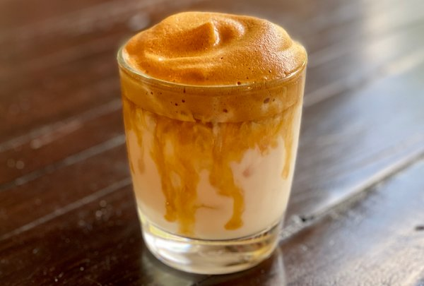

Whipped Coffee
DESCRIPTION
This Instagram-famous drink, known as whipped coffee or dalgona coffee, is made by whipping instant coffee with sugar and water, resulting in a butterscotch-hued foam that’s spooned over milk. While it seems like a trend, many have been making whipped coffee for years. In India and Pakistan, whipped coffee has long been a popular home brew, known as phenti hui. In Greece, the frappé is dalgona’s older, frothier sibling. And, more generally, there are versions that are shaken with egg whites and served with condensed milk.
Ingredients
- 2 tablespoons granulated instant coffee (regular or decaffeinated)
- 1 ½ teaspoons granulated sugar, plus more to taste
- 2 tablespoons hot water
- Ice, as needed
- Milk, as needed
How to Make Shepherd's Pie
- Combine granulated instant coffee, sugar and hot water in a medium bowl
- Whip by hand using a whisk or with a mixer until the mixture turns from foamy to frothy to creamy.
- Spoon the fluffy mixture over milk in a glass filled with ice. (You could also spoon it over warm milk for a hot drink.) Gently combine and serve.